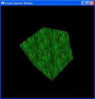

Important information regarding OpenGL and these tutorials:
- These tutorials are meant for OpenGL versions 1.x and 2.x. Alot of the information in these tutorials is outdated and either deprecated or removed in OpenGL 3.x and 4.x, so I am going to write some new tutorials on OpenGL 4.0 instead of wasting everyones time on rewriting these older tutorials.
Cheers,
Swiftless
- 1. OpenGL Window (Version 2.0) March 23, 2010
If you wish to learn OpenGL, then this is the very first tutorial for you. Learn how to create a GLUT window with an OpenGL context, and how to initially setup OpenGL. - 2. OpenGL Window Reshaping (Version 2.0) March 25, 2010
Re-shaping a window with an OpenGL context can cause undesired scaling if not done correctly. If you wish to learn how to fix this, then this tutorial is for you. Learn how to setup your projection matrix with a viewing angle and both near and far planes.
- 3. OpenGL Keyboard Interaction (Version 2.0) March 25, 2010
Keyboard interaction can be handled by the user using system API calls, but why do that when you are already using GLUT which can handle this for you? This tutorial will focus on getting and using the keyboard with the help of GLUT.
- 4. OpenGL Primitives - Square (Version 2.0) March 25, 2010
One of the very first things you will want to do with OpenGL is learn how to draw shapes. OpenGL provides some basic shapes, which can then used to make complex 3D objects.
- 5. OpenGL Color (Version 2.0) March 25, 2010
Colour is one of the fundamental building blocks of a scene. Colours can be used to portray mood, realsim, fictions, intensity, or anything else. It's up to the artist, and in this case, you are the artist.
- 6. OpenGL Cube (Version 2.0) March 25, 2010
From basic 2D shapes, 3D shapes are built. And whilst complex, there are some which are provided to us by GLUT, one of those being your standard cube, made up of 12 triangles and 8 vertices, why hand code it yourself?
- 7. OpenGL Rotation and Translation (Version 2.0) March 25, 2010
Placing objects in a 3D scene is nice, but often enough, you want to be able to move and interact with these shapes. Here you will learn how to rotate them with a single command.
- 8. OpenGL Double Buffering March 25, 2010
While single buffering still displays our final image, it can cause artifacts. Double buffering lets us draw everything in a second buffer, and when finished, lets us transfer it to the screen for a smoother application.
- 9. OpenGL Blending March 25, 2010
Colours can be mixed and matched in OpenGL, just like in real life. Here you will learn how to blend shapes using OpenGL, allowing you to overlay shapes on top of each other to get the most realism you can.
- 10. OpenGL Scaling March 25, 2010
Drawing shapes is fine, moving them about is fine. But do you always want a shape to be the same size? Are all tree's the same height? Of course not. Here I will show you how to scale your 3D shapes.
- 11. OpenGL Lighting March 25, 2010
Flatly colouring shapes is perfect, if we want an unrealistic look to our scene. But for realism, we really want to add some sort of lighting system. You can learn here how to use OpenGL's lighting system for a more realistic scene.
- 12. OpenGL Materials and Lighting March 25, 2010
 Now you have your scene looking a little nicer with some lighting, but all objects are a gray colour. Here we will learn how to assign materials to shapes to change how they look under different lighting conditions.
Now you have your scene looking a little nicer with some lighting, but all objects are a gray colour. Here we will learn how to assign materials to shapes to change how they look under different lighting conditions. - 13. OpenGL Lighting Types March 25, 2010
OpenGL provides us with not one, but three different types of lights we can make, directional lights, point lights and spot lights. I will try to teach you about how each is different, and how to use them.
- 14. OpenGL Fog March 25, 2010
Ever notice how on a clear day, your visibility seems to go on for miles, but when the weather changes, a nice misty fog may come over, and your vision can be reduced to virtually nothing? Well OpenGL has it's own fog system we can take advantage of if we wish to re-create this natural effect.
- 15. OpenGL Fog Types March 25, 2010
Just like there are different types of lighting in OpenGL, we also have different types of fog for different effects. Learn how to use them in this tutorial.
- 16. OpenGL Texturing March 25, 2010
The next step in the quest for realism after lighting, comes in the form of texturing. Texturing is the art of drawing an image on top of a 3D object and is the core behind all 3D applications. Could you imaging Half Life 2 coming out, and the characters looked like store mannequins?
- 17. OpenGL Texture Coordinate Generation March 25, 2010
When assigning a texture to an object, you need to declare the texture coordinates, little values between 0 and 1 that tell us which part of the image maps to which part of the 3D model. OpenGL has some texture coordinate methods for generic texturing.
- 18. OpenGL Popping and Pushing Matrices March 25, 2010
When drawing objects in OpenGL, it can be annoying that you do a translation, and then before drawing the next shape, you have to do a reverse translation to fix your positions. Well OpenGL being a state machine, has the ability to pop and push the current model view matrix, meaning you push on a duplicate of the current matrix before you do your translation, and then revert to the old matrix by pulling the new one off.
- 19. OpenGL Fullscreen Mode March 25, 2010
 Most
games we know, run in fullscreen mode, and lucky for us, GLUT provides
this ability also. So let me show you how to make use of it.
Most
games we know, run in fullscreen mode, and lucky for us, GLUT provides
this ability also. So let me show you how to make use of it. - 20. OpenGL MipMap Generation March 25, 2010
Mip maps are an essential texture extension, which creates scaled down versions of a texture and uses them when an object gets further away, or closer to the near plane. This scaled down version of the texture, makes for nicer, smoother looking textures.
- 21. OpenGL Display Lists March 25, 2010
Display lists are a cached version of a set of OpenGL calls, which can be called again and again, at quicker framerates than writing the code over and over again. There is much controversy over the use of these against Vertex Buffer Objects in relation to speed, so I will show you both, starting with display lists in this tutorial.
- 22. OpenGL Camera March 25, 2010
If you look at making any game where the scene is larger than can be displayed in the window at once, then you are going to need some type of camera system. This is the first of several tutorials on building a first person camera system.
- 23. OpenGL Camera Part 2 March 25, 2010
Here I will be extending upon the previous OpenGL Camera tutorial, and adding a strafe feature (moving side to side). A game without strafing, is going to be terrible, especially when it comes to multiplayer when strafing against enemy fire is essential.
- 24. OpenGL Camera Part 3 March 25, 2010
The first person camera is done, lets take a look at the third person camera, which is essential any type of Role Playing Game. The best part is, this tutorial uses most of the same code as the previous camera tutorial. Just some minor changes to entirely change the feel of your game.
- 25. OpenGL Vertex Coloring March 25, 2010
Along with assigning colours to objects, did you know you can also set colours to individual vertices? Well yes, yes you can.
- 26. OpenGL Vertex Alphas March 25, 2010
Alpha values, just like colours, can be assigned on a per-vertex basis. This allows for varying levels of transparency across objects.
- 27. OpenGL Basic Shadows March 25, 2010
With lighting, comes shadowing. This tutorial takes a basic stencil buffer, and uses it as a stencil to draw a basic shadow on to it.
- 28. OpenGL Basic Reflection March 25, 2010
Just like our shadowing tutorial, this one uses the stencil buffer, but we are going to keep our color buffer enabled to allow us to keep our colors for a basic reflection.
- 29. OpenGL Bounding Sphere Collision March 25, 2010
At present, none of our OpenGL shapes can interact with each other, that is because OpenGL is purely graphics, it doesn't handle physics, so using the Euclidean distance algorithm, we can implement some basic bounding sphere collision ourselves.
- 30. OpenGL Circle Drawing March 25, 2010
Circles are one of the few shapes that are not default in OpenGL, but the good news is, they are easily created using lines. In this tutorial, I will show you how to draw a nice, round, circle.
- 31. OpenGL Sphere Creation March 25, 2010
 While GLUT provides a sphere for us to draw, that sphere does not contain texture coordinates. In this tutorial, I will show you how to create your own sphere, which has texture coordinates included. Now you can make that solar system demo you have always wanted!
While GLUT provides a sphere for us to draw, that sphere does not contain texture coordinates. In this tutorial, I will show you how to create your own sphere, which has texture coordinates included. Now you can make that solar system demo you have always wanted! - 32. OpenGL Particle Engine March 25, 2010
Lets face it, particles are ALOT of fun. Whether you want to create a weather system, some awesome fire, or just throw a million objects around randomly, they are both stimulating in a game, and fun.
- 33. OpenGL Animating Textures March 25, 2010
Textures by themselves are perfectly fine, you don't have to do anything with them. But have you ever wanted to load a movie into a 3D scene? Maybe you want to read a movie file, and display it on a quad moving around your scene. Well you can, but you have to do it frame, by frame.
- 34. Orthogonal Projections March 25, 2010
While OpenGL is built for 3D rendering, it does also support 2D. This is where you want orthogonal projections, which are perfect for a Heads Up Display, or a menu system.
- 35. OpenGL Tiling Engine March 25, 2010
If you want to create a game like Sim City, or an RPG, then you are going to need some sort of tiling engine. This breaks up the ground into a bunch of known images and places them on runtim. This saves us having extremely large image files for an entire map and also makes it customizable in-game.
- 6. Terrain Vertex Buffer Objects March 25, 2010
Vertex Buffer Objects are used to store vertices, their indices and other information on the graphics card, for OpenGL to access directly. They are extremely fast and effecient, and are meant to supersede Display Lists. So lets use them for our terrain!
- 1. OpenGL Drivers March 25, 2010
The OpenGL drivers can be tricky for some people to find, and whilst I recommend using GLEW and FreeGLUT, feel free to download these files, although they may be out of date.
- 3. OpenGL Tips March 25, 2010
Here is a collection of tips for using OpenGL that I have started compiling, expect it to grow :)
- 36. OpenGL Framebuffers April 22, 2010
If you want to use any type of off screen rendering process, then frame buffers are probably the go for you. They allow you to render an entire scene, directly to a texture.
Cool stuff
Excellent tutorials. Very detailed. Very understandable. However there must be a tutorial for loading 3d models of various formats (.obj for instance) from 3d modeling software (Blender for instance) into OpenGL.
add a 3D rendering code for ct images.that is 2D to 3D conversion code
THANKS A LOT. This is one of the only site with such a complete Glut/OpenGL tutorial.
Maybe a little complement on how to include these in different programming environments (Visual Studio on Windows, XCode on Mac…).
add some more..great work
Please, more tutorials! Perhaps on more advanced rendering, like deferred shading, HDR, motion blur, frustrum culling techniques, anything like that? Showing how to use GLSL for ocean simulation (waves, shore fogging, underwater stuff…)
Your tutorials are great, please make more!
[...] [...]
[...] because of it using glut to create the window instead of the WINAPI. the link to the tutorial Swiftless OpenGL Tutorials | Swiftless Tutorials I created this set of code by myself, and when it didnt work i reffered back to the tutorial code [...]
[...] September 7, 2010 at 12:44 am (Uncategorized) http://www.swiftless.com/opengltuts.html [...]
[...] od SFML-a pokazującą, jak połączyć te biblioteki. Potem tutoriale NeHe, aż w końcu świetny kurs ze strony swiftless.com Podczas przeglądania tych lekcji stwierdziłem, że nauka OpenGL-a wychodzi mi o wiele sprawniej, [...]
[...] this Swiftless OpenGL Tutorials | Swiftless Tutorials or OpenGL Video Tutorial – [...]
[...] Game Developing lets see if I can top that OpenGL API Code & Tutorial Listings Swiftless OpenGL Tutorials | Swiftless Tutorials OpenGL @ Lighthouse 3D – Tutorials OpenGL Tutorials – Home my job here is done Learning C++ [...]
[...] This post was mentioned on Twitter by Micke Ahola. Micke Ahola said: #best #opengl #tutorials http://bit.ly/cjdj9x [...]